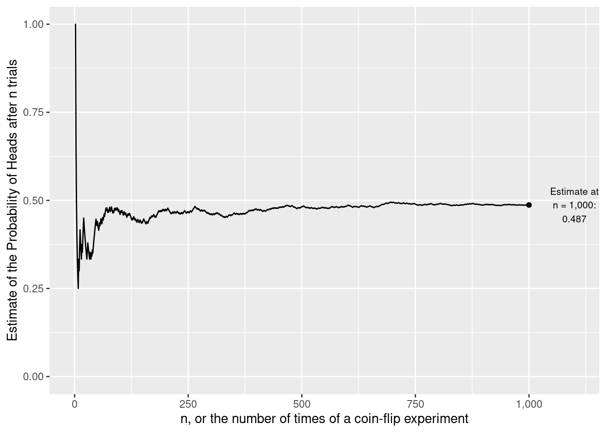
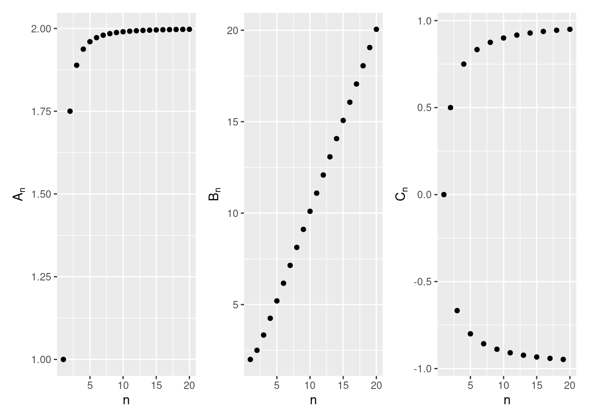
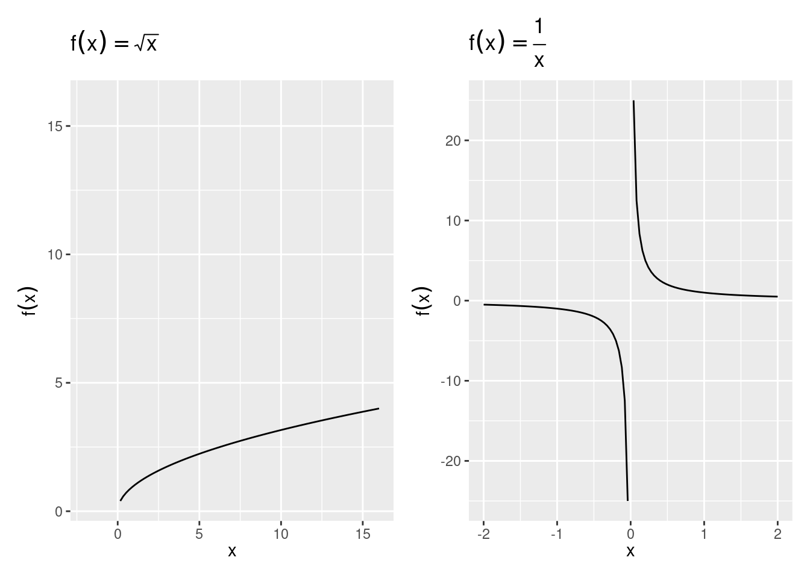
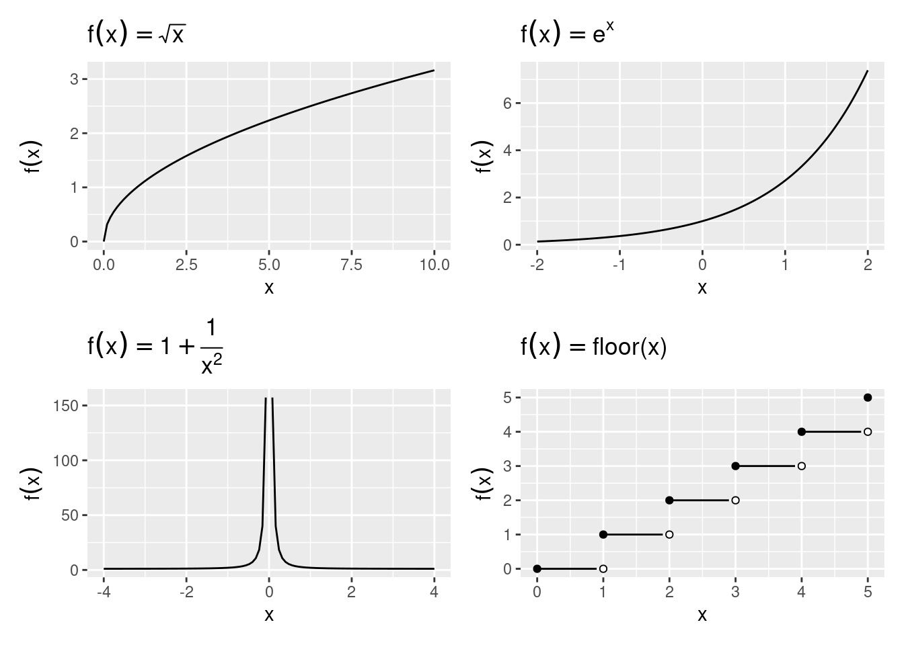

3 Limits
Solving limits, i.e. finding out the value of functions as its input moves closer to some value, is important for the social scientist’s mathematical toolkit for two related tasks. The first is for the study of calculus, which will be in turn useful to show where certain functions are maximized or minimized. The second is for the study of statistical inference, which is the study of inferring things about things you cannot see by using things you can see.
Example: The Central Limit Theorem
Perhaps the most important theorem in statistics is the Central Limit Theorem,
Theorem 3.1 (Central Limit Theorem) For any series of independent and identically distributed random variables \(X_1, X_2, \cdots\), we know the distribution of its sum even if we do not know the distribution of \(X\). The distribution of the sum is a Normal distribution.
\[\frac{\bar{X}_n - \mu}{\sigma / \sqrt{n}} \xrightarrow{d} \text{Normal}(0, 1)\]
where \(\mu\) is the mean of \(X\) and \(\sigma\) is the standard deviation of \(X\). The arrow is read as “converges in distribution to”. \(\text{Normal}(0, 1)\) indicates a Normal Distribution with mean 0 and variance 1.
That is, the limit of the distribution of the lefthand side is the distribution of the righthand side.
The sign of a limit is the arrow “\(\rightarrow\)”. Although we have not yet covered probability so we have not described what distributions and random variables are, it is worth foreshadowing the Central Limit Theorem. The Central Limit Theorem is powerful because it gives us a guarantee of what would happen if \(n \rightarrow \infty\), which in this case means we collected more data.
Example: The Law of Large Numbers
A finding that perhaps rivals the Central Limit Theorem is the (Weak) Law of Large Numbers:
Theorem 3.2 ((Weak) Law of Large Numbers) For any draw of identically distributed independent variables with mean \(\mu\), the sample average after \(n\) draws, \(\bar{X}_n\), converges in probability to the true mean as \(n \rightarrow \infty\):
\[\lim\limits_{n\to \infty} P(|\bar{X}_n - \mu | > \varepsilon) = 0\]
A shorthand of which is \(\bar{X}_n \xrightarrow{p} \mu\), where the arrow is read as “converges in probability to”.
Intuitively, the more data, the more accurate is your guess. For example, Figure 3.1 shows how the sample average from many coin tosses converges to the true value : 0.5.
3.1 Sequences
We need a couple of steps until we get to limit theorems in probability. First we will introduce a “sequence”, then we will think about the limit of a sequence, then we will think about the limit of a function.
A sequence \(\{x_n\}=\{x_1, x_2, x_3, \ldots, x_n\}\) is an ordered set of real numbers, where \(x_1\) is the first term in the sequence and \(y_n\) is the \(n\)th term. Generally, a sequence is infinite, that is it extends to \(n=\infty\). We can also write the sequence as \(\{x_n\}^\infty_{n=1}\)
where the subscript and superscript are read together as “from 1 to infinity.”
Example 3.1 (Sequences) How do these sequences behave?
- \(\{A_n\}=\left\{ 2-\frac{1}{n^2} \right\}\)
- \(\{B_n\}=\left\{\frac{n^2+1}{n} \right\}\)
- \(\{C_n\}=\left\{(-1)^n \left(1-\frac{1}{n}\right) \right\}\)
We find the sequence by simply “plugging in” the integers into each \(n\). The important thing is to get a sense of how these numbers are going to change.
Graphing helps you make this point more clearly. See the sequence of \(n = 1, ...20\) for each of the three examples in Figure 3.2.

3.2 The Limit of a Sequence
The notion of “converging to a limit” is the behavior of the points in Example -@#exm-seqbehav. In some sense, that’s the counterfactual we want to know. What happens as \(n\rightarrow \infty\)?
- Sequences like 1 above that converge to a limit.
- Sequences like 2 above that increase without bound.
- Sequences like 3 above that neither converge nor increase without bound — alternating over the number line.
Definition: Limit The sequence \(\{y_n\}\) has the limit \(L\), which we write as \(\lim\limits_{n \to \infty} y_n =L\), if for any \(\epsilon>0\) there is an integer \(N\) (which depends on \(\epsilon\)) with the property that \(|y_n -L|<\epsilon\) for each \(n>N\). \(\{y_n\}\) is said to converge to \(L\). If the above does not hold, then \(\{y_n\}\) diverges.
We can also express the behavior of a sequence as bounded or not:
- Bounded: if \(|y_n|\le K\) for all \(n\)
- Monotonically Increasing: \(y_{n+1}>y_n\) for all \(n\)
- Monotonically Decreasing: \(y_{n+1}<y_n\) for all \(n\)
A limit is unique: If \(\{y_n\}\) converges, then the limit \(L\) is unique.
If a sequence converges, then the sum of such sequences also converges. Let \(\lim\limits_{n \to \infty} y_n = y\) and \(\lim\limits_{n \to \infty} z_n =z\). Then
- \(\lim\limits_{n \to \infty} [k y_n + \ell z_n]= k y + \ell z\)
- \(\lim\limits_{n \to \infty} y_n z_n = yz\)
- \(\lim\limits_{n \to \infty} \frac{y_n}{z_n} = \frac{y}{z}\), provided \(z\neq 0\)
This looks reasonable enough. The harder question, obviously is when the parts of the fraction don’t converge. If \(\lim_{n\to\infty} y_n = \infty\) and \(\lim_{n\to\infty} z_n = \infty\), What is \(\lim_{n\to\infty} y_n - z_n\)? What is \(\lim_{n\to\infty} \frac{y_n}{z_n}\)?
It is nice for a sequence to converge in limit. We want to know if complex-looking sequences converge or not. The name of the game here is to break that complex sequence up into sums of simple fractions where \(n\) only appears in the denominator: \(\frac{1}{n}, \frac{1}{n^2}\), and so on. Each of these will converge to 0, because the denominator gets larger and larger. Then, because of the properties above, we can then find the final sequence.
Example 3.2 (Ratios) Find the limit of \(\lim_{n\to \infty} \frac{n + 3}{n}\)
Solution. At first glance, \(n + 3\) and \(n\) both grow to \(\infty\), so it looks like we need to divide infinity by infinity. However, we can express this fraction as a sum, then the limits apply separately:
\[\lim_{n\to \infty} \frac{n + 3}{n} = \lim_{n\to \infty} \left(1 + \frac{3}{n}\right) = \underbrace{\lim_{n\to \infty}1}_{1} + \underbrace{\lim_{n\to \infty}\left(\frac{3}{n}\right)}_{0}\]
so, the limit is actually 1.
After some practice, the key to intuition is whether one part of the fraction grows “faster” than another. If the denominator grows faster to infinity than the numerator, then the fraction will converge to 0, even if the numerator will also increase to infinity. In a sense, limits show how not all infinities are the same.
Exercise 3.1 (Limits) Find the following limits of sequences, then explain in English the intuition for why that is the case.
- \(\lim\limits_{n\to\infty} \frac{2n}{n^2 + 1}\)
- \(\lim\limits_{n\to\infty} (n^3 - 100n^2)\)
3.3 Limits of a Function
We’ve now covered functions and just covered limits of sequences, so now is the time to combine the two.
A function \(f\) is a compact representation of some behavior we care about. Like for sequences, we often want to know if \(f(x)\) approaches some number \(L\) as its independent variable \(x\) moves to some number \(c\) (which is usually 0 or \(\pm\infty\)). If it does, we say that the limit of \(f(x)\), as \(x\) approaches \(c\), is \(L\): \(\lim\limits_{x \to c} f(x)=L\). Unlike a sequence, \(x\) is a continuous number, and we can move in decreasing order as well as increasing.
For a limit \(L\) to exist, the function \(f(x)\) must approach \(L\) from both the left (increasing) and the right (decreasing).
Definition 3.1 (Limits of a function) Let \(f(x)\) be defined at each point in some open interval containing the point \(c\). Then \(L\) equals \(\lim\limits_{x \to c} f(x)\) if for any (small positive) number \(\epsilon\), there exists a corresponding number \(\delta>0\) such that if \(0<|x-c|<\delta\), then \(|f(x)-L|<\epsilon\).
A neat, if subtle result is that \(f(x)\) does not necessarily have to be defined at \(c\) for \(\lim\limits_{x \to c}\) to exist.
Properties: Let \(f\) and \(g\) be functions with \(\lim\limits_{x \to c} f(x)=k\) and \(\lim\limits_{x \to c} g(x)=\ell\).
- \(\lim\limits_{x \to c}[f(x)+g(x)]=\lim\limits_{x \to c} f(x)+ \lim\limits_{x \to c} g(x)\)
- \(\lim\limits_{x \to c} kf(x) = k\lim\limits_{x \to c} f(x)\)
- \(\lim\limits_{x \to c} f(x) g(x) = \left[\lim\limits_{x \to c} f(x)\right]\cdot \left[\lim\limits_{x \to c} g(x)\right]\)
- \(\lim\limits_{x \to c} \frac{f(x)}{g(x)} = \frac{\lim\limits_{x \to c} f(x)}{\lim\limits_{x \to c} g(x)}\), provided \(\lim\limits_{x \to c} g(x)\ne 0\).
Simple limits of functions can be solved as we did limits of sequences. Just be careful which part of the function is changing.
Example 3.3 (Limits of a function) Find the limit of the following functions.
- \(\lim_{x \to c} k\)
- \(\lim_{x \to c} x\)
- \(\lim_{x\to 2} (2x-3)\)
- \(\lim_{x \to c} x^n\)
Limits can get more complex in roughly two ways. First, the functions may become large polynomials with many moving pieces. Second, the functions may become discontinuous.
The function can be thought of as a more general or “smooth” version of sequences. For example,
Example 3.4 (Limits of ratios) Find the limit of
\[\lim_{x\to\infty} \frac{(x^4 +3x−99)(2−x^5)}{(18x^7 +9x^6 −3x^2 −1)(x+1)}\]
Now, the functions will become a bit more complex:
Exercise 3.2 (Limits of a function) Solve the following limits of functions
- \(\lim\limits_{x\to 0} |x|\)
- \(\lim\limits_{x\to 0} \left(1+\frac{1}{x^2}\right)\)
So there are a few more alternatives about what a limit of a function could be:
- Right-hand limit: The value approached by \(f(x)\) when you move from right to left.
- Left-hand limit: The value approached by \(f(x)\) when you move from left to right.
- Infinity: The value approached by \(f(x)\) as x grows infinitely large. Sometimes this may be a number; sometimes it might be \(\infty\) or \(-\infty\).
- Negative infinity: The value approached by \(f(x)\) as x grows infinitely negative. Sometimes this may be a number; sometimes it might be \(\infty\) or \(-\infty\).
The distinction between left and right becomes important when the function is not determined for some values of \(x\). What are those cases in the examples below?

3.4 Continuity
To repeat a finding from the limits of functions: \(f(x)\) does not necessarily have to be defined at \(c\) for \(\lim\limits_{x \to c}\) to exist. Functions that have breaks in their lines are called discontinuous. Functions that have no breaks are called continuous. Continuity is a concept that is more fundamental to, but related to that of “differentiability”, which we will cover next in calculus.
Definition 3.2 (Continuity) Suppose that the domain of the function \(f\) includes an open interval containing the point \(c\). Then \(f\) is continuous at \(c\) if \(\lim\limits_{x \to c} f(x)\) exists and if \(\lim\limits_{x \to c} f(x)=f(c)\). Further, \(f\) is continuous on an open interval \((a,b)\) if it is continuous at each point in the interval.
To prove that a function is continuous for all points is beyond this practical introduction to math, but the general intuition can be grasped by graphing.
Example 3.5 (Continuity) For each function, determine if it is continuous or discontinuous.
- \(f(x) = \sqrt{x}\)
- \(f(x) = e^x\)
- \(f(x) = 1 + \frac{1}{x^2}\)
- \(f(x) = \text{floor}(x)\).
The floor is the smaller of the two integers bounding a number. So \(\text{floor}(x = 2.999) = 2\), \(\text{floor}(x = 2.0001) = 2\), and \(\text{floor}(x = 2) = 2.\)
Solution. In Figure 3.3, we can see that the first two functions are continuous, and the next two are discontinuous. \(f(x) = 1 + \frac{1}{x^2}\) is discontinuous at \(x= 0\), and \(f(x) = \text{floor}(x)\) is discontinuous at each whole number.

Some properties of continuous functions:
- If \(f\) and \(g\) are continuous at point \(c\), then \(f+g\), \(f-g\), \(f \cdot g\), \(|f|\), and \(\alpha f\) are continuous at point \(c\) also. \(f/g\) is continuous, provided \(g(c)\ne 0\).
- Boundedness: If \(f\) is continuous on the closed bounded interval \([a,b]\), then there is a number \(K\) such that \(|f(x)|\le K\) for each \(x\) in \([a,b]\).
- Max/Min: If \(f\) is continuous on the closed bounded interval \([a,b]\), then \(f\) has a maximum and a minimum on \([a,b]\). They may be located at the end points.
Exercise
Let \(f(x) = \frac{x^2 + 2x}{x}.\)
- Graph the function. Is it defined everywhere?
- What is the functions limit at \(x \rightarrow 0\)?
Special thanks to Shiro Kuriwaki for developing the original version of this tutorial↩︎
Special thanks to Shiro Kuriwaki and Yon Soo Park for developing the original module↩︎
Module originally written by Shiro Kuriwaki, Connor Jerzak, and Yon Soo Park↩︎
Module originally written by Connor Jerzak and Shiro Kuriwaki↩︎